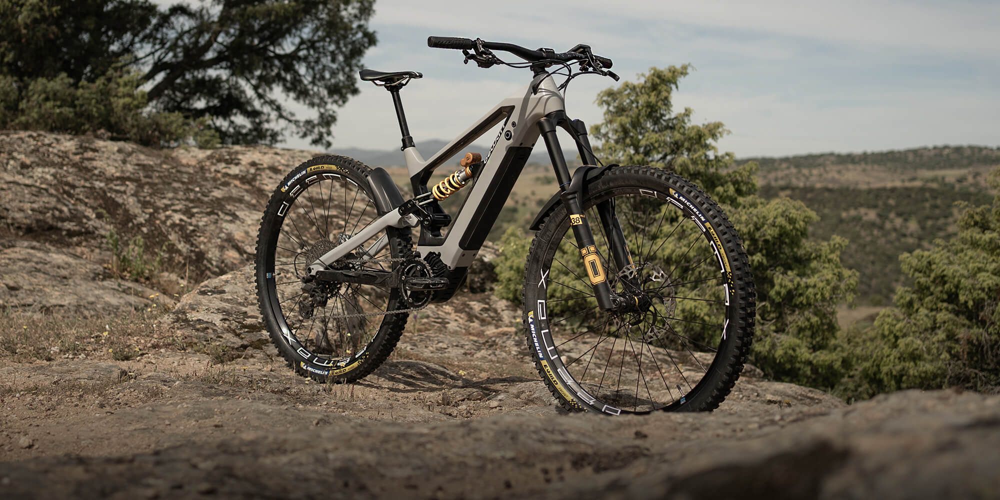
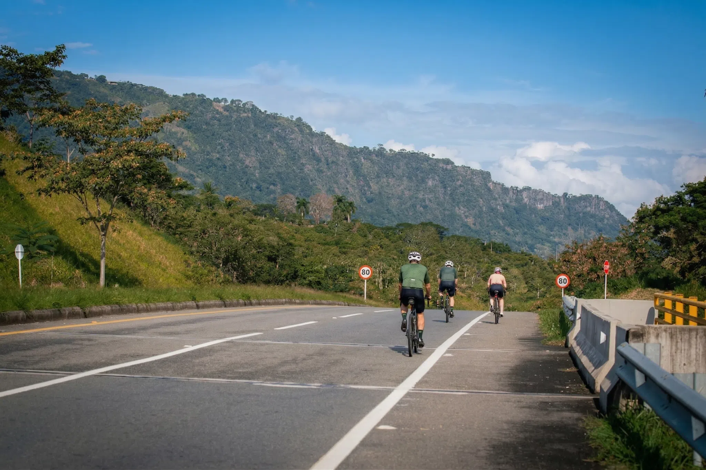

Alquiler de bicicletas por hora, día o semana
Disponible para uso diario, semanal o mensual, con opciones de precios flexibles.
Bienvenido a Rueda Libre, tu solución para alquilar bicicletas en Medellín. Conoce dónde estamos ubicados
Somos una empresa dedicada a proporcionar servicios de alquiler de bicicletas en Medellín, con el objetivo de fomentar el uso de transporte ecológico.
Disponible para uso diario, semanal o mensual, con opciones de precios flexibles.
Ofrecemos rutas guiadas para explorar Medellín y sus alrededores, ideales para turistas y locales.
Contamos con un taller de mantenimiento y reparación para asegurar que nuestras bicicletas estén siempre en óptimas condiciones.



Nos encontramos en el centro de Medellín, o contáctanos desde nuestra página web